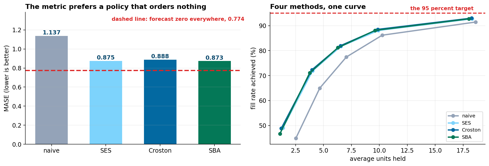

- Setting
- A machinery dealer's parts warehouse. Sixty part numbers, three years of weekly issues, stock reviewed weekly and a supplier who delivers two weeks after an order, so every order has to cover three weeks.
- The question
- How many of each part should be held, so that 95 units in every 100 demanded ship the day they are asked for?
- Why it matters
- Hold too little and a machine stands idle in a field. Hold too much and the money is on a shelf. The catalog is mostly slow movers, which is where both mistakes are easiest to make.
- What we do
- Classify the catalog, find the part that is dead rather than slow, show why the reported percentage error cannot be computed, compare four forecasting methods on MASE, and then price the service level that actually decides the answer.
Every method in this chapter is judged twice, once on how close its forecast came and once on whether the stock it implied served the customer. The two answers do not agree, and the chapter is about the gap between them.
Most part-weeks hold no demand
The extract arrived with 9,420 rows for what should be 60 parts across 156 weeks. One week had been extracted twice, one part number was written three ways, a customer return was booked as minus eleven units and a stock count of 9,999 had been typed into the issues column. After cleaning there were 60 parts, 156 weeks and 17,925 units issued in total.
![Four panels. Top left: total weekly units across all sixty parts, an ordinary noisy series between about 50 and 290. Top right: three individual parts drawn as stems, one smooth with 10 percent of weeks empty, one intermittent with 75 percent empty and one lumpy with 80 percent empty. Bottom left: every part plotted by squared coefficient of variation of order size against weeks between orders, with the 0.49 and 1.32 cut-offs drawn, giving smooth 6, erratic 7, intermittent 21 and lumpy 26. Bottom right: what a part-week contains, 61.0 percent nothing, 27.7 percent one to four units, 10.0 percent five to nineteen and 1.3 percent twenty or more.](../assets/img/capstone-spares-firstlook.png)
The classification is the Syntetos-Boylan-Croston scheme, which sorts parts by how many weeks pass between orders and how much the order sizes vary. Both cut-offs are the published ones. Here it gives 26 lumpy, 21 intermittent, 7 erratic and 6 smooth, and the four groups need different things, which is the reason for classifying at all.
A superseded part hiding among the slow ones
A part that has stopped moving and a part that moves rarely look identical in a spreadsheet, and they need opposite decisions. The way to tell them apart is to measure silence in units of that part's own rhythm rather than in weeks.
| Part | Weeks since the last order | Its own typical gap | Ratio |
|---|---|---|---|
| P1024 | 37 | 2.6 | 14.0× |
| P1052 | 21 | 5.4 | 3.9× |
| P1053 | 11 | 3.4 | 3.3× |
P1024 has gone fourteen times its own gap without an order, and the runner-up is at four. It was superseded by a newer part number partway through the history. In the year that was held back it was issued zero units. Three of the four methods in this chapter would have produced a positive forecast for it (exponential smoothing 0.013 a week, Croston 0.452 and SBA 0.429), the warehouse would have stocked it, and the stock would never have moved. Only the naive rule says zero, because the part's last training week happened to be empty.
Four weeks of quiet means nothing for a part ordered twice a year and a great deal for one ordered every fortnight. That is why the test is a ratio. It is a decision about the catalog rather than about forecasting, and it belongs before any of it. So P1024 is excluded, leaving 59 parts.
The error measure that cannot be computed
The planning tool reports a mean absolute percentage error every month. A percentage error divides by the actual demand. On a week when nothing was demanded, there is nothing to divide by.
The holdout year contains 3,068 part-weeks, of which 1,867 have zero demand. MAPE is undefined on every one of them. There is not a single part in the catalog where it can be computed for the whole year, and the share of the year it would actually be computed on is 39.1 percent. The number that reached the monthly pack was a percentage error on the weeks that happened to have demand.
Those are the easy weeks. A forecast is roughly right about a week with demand far more often than it is right about which weeks will have any, so the measure was scoring the part of the problem that was not the problem. It did not fail loudly. It dropped the undefined rows and averaged what was left.
The replacement used from here is MASE, the mean absolute scaled error, which divides by the average absolute week-to-week change of the series itself rather than by the actual. It is defined on zeros, it is comparable across parts of very different sizes, and below 1 means the forecast's error was smaller than the average error of repeating the previous week inside the two training years.
SBA edges out exponential smoothing by a hair
Each method takes two years of history for a part and returns one number. Croston's method is the one built for this problem. Instead of smoothing the raw series, it smooths the order size and the interval between orders separately and divides one by the other. SBA is Croston with the Syntetos-Boylan correction, a multiplier of one minus half the smoothing constant, which exists because a ratio of two smoothed estimates is biased upward.
| Class | Parts | Naive | SES | Croston | SBA |
|---|---|---|---|---|---|
| Smooth | 6 | 0.753 | 0.751 | 0.752 | 0.757 |
| Erratic | 7 | 1.140 | 0.848 | 0.842 | 0.823 |
| Intermittent | 21 | 0.850 | 0.901 | 0.945 | 0.929 |
| Lumpy | 26 | 1.446 | 0.890 | 0.887 | 0.871 |
| All parts | 59 | 1.137 | 0.875 | 0.888 | 0.873 |
SBA is best overall, and the margin over plain exponential smoothing is 0.001. It wins the erratic and lumpy classes, where sizes swing about and the upward bias bites hardest, and it loses the intermittent class to the naive rule. The Syntetos-Boylan correction is worth 0.014 MASE against uncorrected Croston, which is small and free.
The naive rule is the worst overall by a wide margin, and it is worth pausing on why that is not obvious. On the aggregate warehouse series in the first picture, repeating last week would have looked perfectly respectable.
Why a forecast of zero wins on MASE
Three of the four methods land within two percent of one another. That says more about the measure than about the methods, and the cleanest way to see it is to ask what the best possible constant forecast would have been, chosen with hindsight.
Mean absolute error is minimized at the median, and for a part ordered once a month the median week contains no demand at all. So a scoreboard built on absolute error rewards whichever method leans lowest. A forecast of zero for every part, a policy that never orders anything, scores 0.774 and beats all four honest methods. The best constant chosen with hindsight, which is zero for 44 of the parts and the median of the year for the rest, does better still at 0.622.
This is the metric lesson from Chapter 198 in its most extreme form. The measure has to come from the decision. The decision here is how many units to hold, and that is answered by a quantile of demand over the lead time. An average of weekly demand cannot answer it, and whichever method minimizes an error statistic certainly cannot.
The number the warehouse actually needs
A forecast of 0.74 units a week is never the demand in any week. The warehouse orders against a level. It holds a set number, tops up weekly and waits two weeks for the supplier. So the quantity to get right is total demand over the three weeks an order has to cover, and specifically a high quantile of it.
| For one lumpy part, P1045 | Order up to | Fill rate | Units held |
|---|---|---|---|
| The middle of three-week demand | 0.6 | 8.8% | 0.2 |
| The 80th percentile | 3.6 | 38.6% | 2.0 |
| The 95th percentile | 12.6 | 84.6% | 9.1 |
Ordering to the middle fills fewer than one unit in ten. The calculation is sound. Half of all three-week windows fall above the middle, and in demand shaped like this the ones that do fall a long way above. Everything past the middle is safety stock, and how much of it to hold is the decision the warehouse is really making.
What moves the fill rate
Every live part was run through the policy, for each method and each service quantile, and scored on the year that was held back. The fill rate pools every part, units shipped on the day out of units demanded.
| Service quantile | Naive | SES | Croston | SBA |
|---|---|---|---|---|
| 0.50 | 44.9% | 49.1% | 48.9% | 46.7% |
| 0.80 | 65.0% | 71.8% | 72.3% | 71.1% |
| 0.90 | 77.4% | 81.7% | 82.0% | 81.2% |
| 0.95 | 86.2% | 88.1% | 88.5% | 88.1% |
| 0.98 | 91.4% | 92.7% | 93.0% | 92.7% |
At the service level the business asked for, the four methods span 2.3 points of fill rate, and most of that is the naive rule being poor. SES, Croston and SBA span 0.4 points. Holding the method fixed and moving the quantile moves the fill rate by 46.0 points. The choice nobody discusses has twenty times the leverage of the choice everyone argues about.
None of this means the method can be chosen carelessly. SBA is free and slightly better, so use it. The argument is about where the attention belongs, and in most warehouses it is pointed at the forecast.

What a high service quantile actually delivers
Asking for the 0.95 quantile of lead-time demand delivered a fill rate of 88.1 percent, short of 95. Those are different quantities. The quantile controls how often a replenishment cycle runs short; the fill rate counts units, and a cycle that runs short by twenty units counts worse than one that runs short by one. If the business has agreed a fill rate, the quantile has to be tuned until the simulation delivers it. Here even the 0.98 quantile delivers 92.7 percent, so a 95 percent fill rate needs a quantile above the range tried.
| Quantile | Fill rate | Units held | Extra stock per point of fill rate |
|---|---|---|---|
| 0.50 | 46.7% | 1.1 | — |
| 0.80 | 71.1% | 3.8 | 0.11 |
| 0.90 | 81.2% | 6.3 | 0.25 |
| 0.95 | 88.1% | 9.6 | 0.48 |
| 0.98 | 92.7% | 18.0 | 1.82 |
The last few points of service cost about seventeen times as much stock per point as the first ones. Going from 47 to 81 percent costs about five units a part. The next twelve points, to 93, cost about twelve more. That curve is what a service-level conversation should be held over, because it is the only place in this chapter where the business is being asked to spend money.
What this does not settle
One smoothing constant, never tuned. Every method here uses 0.10, the conventional default for intermittent demand. Tuning it per part on a rolling origin would tighten the forecasts a little and would not move the service curve, which is the part that matters.
The spread came from history alone, with no model behind it. The order-up-to level takes its level from the forecast and its spread from that part's own past three-week windows. A part whose pattern is changing gets a stale spread and nothing here would notice.
Fill rate is not the only service measure. Counting units treats one customer waiting for twenty parts the same as twenty customers waiting for one each. If the second is worse for the business, the target should not be a fill rate.
Every part was treated as its own problem. Parts that fail together, or that substitute for one another, break that assumption in opposite directions. For sixty parts that is defensible. For sixty thousand it is where the remaining gains are.
What to watch
- ✓Count the zeros before choosing an error measure. If a percentage error is being reported on a series with zeros in it, something is being dropped, and it is usually the majority of the data.
- ✓Separate the dead from the slow first. Measure silence in units of the part's own inter-order interval instead of in weeks, and set the threshold where the ratio separates cleanly.
- ✓Classify before you compare. The four classes reward different methods, and an average over all of them hides that the naive rule has the best average on the 21 intermittent parts and the lowest error on 40 of the 59 parts taken one at a time.
- ✓Ask what the error-minimizing forecast would be. If it is zero, the measure is not aligned with the decision and no amount of method selection will fix that.
- ✓Simulate the policy before trusting the service level. A 0.95 quantile is not a 95 percent fill rate, and the only way to know the gap is to run the year through the policy.
- ✓Put the service curve in front of whoever sets the target. The last few points of fill rate cost several times what the first ones did, and that is a business decision rather than a forecasting one.
Intermittent demand in data science & AI
Intermittency is the standard case in service parts, and it appears wherever events are rare enough that most periods are empty. In all of them the useful output is a distribution rather than a number, and most forecasting stacks return a number.
| Where it shows up | The zeros are | What the decision needs |
|---|---|---|
| Service parts and after-sales | Weeks with no failure | A stock level that meets a service target |
| Insurance claims by policy | Years with no claim | A reserve covering a high quantile of loss |
| Rare-event alerting | Hours with no incident | A threshold priced against the cost of a miss |
| Long-tail retail and marketplaces | Days with no sale for that item | A reorder point, per item, at scale |
Croston proposed separating size from interval in 1972. Syntetos and Boylan showed in 2001 that the resulting ratio is biased upward and gave the correction used here, then in 2005 published the classification scheme with the two cut-offs this chapter uses. The modern direction is to model the distribution directly rather than its mean: negative binomial and compound Poisson formulations, quantile-based deep models such as DeepAR trained across a whole catalog, and zero-inflated approaches. All of them aim at the quantile, the same target as Section 8, and none of them removes the need to simulate the policy and measure the service actually delivered.
The full project step by step
The companion notebook cleans the export, classifies all sixty parts on the Syntetos-Boylan-Croston plane, separates the superseded part from the slow ones, shows how much of the year a percentage error could be computed on, implements Croston and SBA from scratch alongside two baselines, finds the best possible constant forecast, and then simulates a weekly review policy across every method and every service quantile.
The dataset
(capstone-intermittent-demand-spare-parts.xlsx) holds three years of weekly issues for sixty
part numbers, 9,360 rows once the duplicated week is removed, with the parts family and the messy layer
the export arrived with. The data were written for the book as teaching data. Two written reports accompany it, a plain-language brief for the
parts director and a technical report covering the classification, the four methods, the
MASE comparison and the policy simulation.
🎓 In brief
- ✓Three part-weeks in five contain no demand, so the monthly MAPE could be computed on 39.1 percent of the year and on no single part in full.
- ✓One part was dead rather than slow, silent for 14 times its own typical gap against a runner-up at 4, and it was issued zero units in the holdout year.
- ✓SBA was best overall at 0.873 MASE, ahead of exponential smoothing by 0.001 and of uncorrected Croston by 0.014, and it lost the intermittent class to a naive rule.
- ✓Forecasting zero everywhere scores 0.774 and beats all four, because absolute error is minimized at the median and the median week is empty.
- ✓The method is worth 2.3 points of fill rate and the service quantile is worth 46. Asking for the 0.95 quantile delivered 88.1 percent, and the last stretch of service cost about seventeen times as much stock per point as the first.